Working with GeODinQGIS
GeODinQGIS is a plugin to connect QGIS with the software
GeODin. This allows to use GeODin databases inside of QGIS. Please keep your
version of GeODin up to date. It is important to have the 32-bit version of
QGIS installed otherwise no databases can be load.
3........ Visualisation in QGIS3
1 Overview
After installing the plugin in QGIS the plugin
buttons are added to the toolbar.

These are from left to right:
1. the interface of GeODinQGIS
2. the options menu
3.
the
refresh button to reload QGIS layers
4. the help.
The flag shows the current plugin
operating language and is free to choose. Preliminary only the languages english and german are available.
A right docked window opens with a
click on the GeODin button in the toolbar.
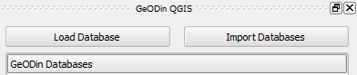
A click on the button "Load
Database" allows to load a database from the computer's file system.
The button "Import
Databases" reads the windows registry and loads the registered databases.
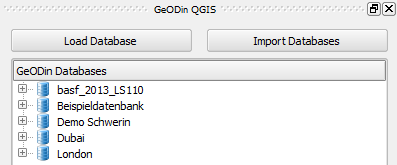
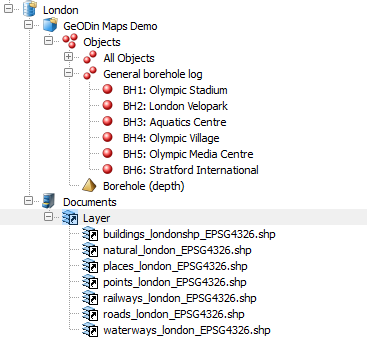
This method only shows databases, which were created with GeODin earlier. Other databases, which might were added by manipulation of the geodin.ini file, receive no consideration due to the fact that they are not listed in the windows registry. A database is not loaded in QGIS, if the database was deleted from the file system. However there might be a reference in the windows registry, if the database connection was not deleted in GeODin.The view copies the visualisation of
the GeODin object manager.
2 First Steps
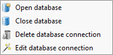
Use the right click menu on the database level to call database management options.This
menu allows the edition or deletion of a database connection. This works only
for the connection to QGIS, the database itself and the connection to GeODin
are not touched.
3 Visualisation in QGIS
In addition to the database objects the
database shape files are imported to QGIS, if they were properly stored in the
GeODin folder "Documents". As they are vector files they can easily
added to the QGIS map canvas.
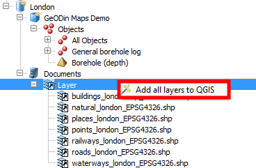
The right click menu is called to add the
proper group or file to the map. The shape file already has a geospatial
reference, so no dialog is needed to choose the correct coordinate system.
In the same way all objects of a project or
objects of one object type can be added to the map. Therefore the right click
menu is called below the level "All Objects".
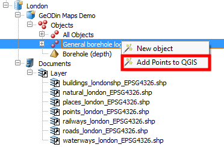
These points are stored in a temporary vector
file. A dialog opens afterwards to define the proper projections of the vector
file.
Note: Cancelling the dialog for the selection of a coordinate system
will use the default coordinate system for spatial reference (usually WGS84).
This is an internal function of QGIS and can be changed in the QGIS settings.
Cancelling this process does not mean that adding the points to map is interrupted.
If objects were added to map canvas and changes
have been made to the database, this changes can be
synchronised with the vector file in QGIS. To do so the "refresh"
button in the upper toolbar is used. This will read changes in the database and
transfer them to the vector file. If the vector file was changed independently
from the database, any changes will be lost.

4 New Object
The reght click menu
on the node "All Objects" allows the creation of new objects.
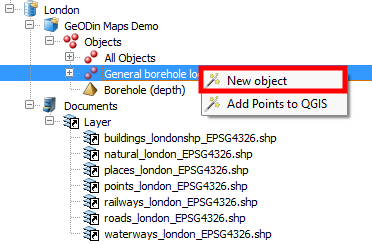
A right docked window opens.
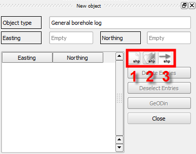
Adding a vector file
New objects will be stored in a vector file as points. There are three possibilities:
1.
The
user can create a new vector file in the file system. Two dialogs will open to
specify the coordinate system and the path of the file. If successful, the new
vector file will be loaded and displayed in the QGIS layer list.
2.
The
user can load an already existing vector file from the file system. If
successful, the new vector file will be loaded and displayed in the QGIS layer
list.
3.
The
user can use an already loaded vector file. To do so the vector file must be
"visible" in the QGIS layer list. A dialog opens to select the file
from the layer list. The file must exist in the file system, volatile files are
not permitted, because they are loaded to the memory of the PC. The structure
of the attribute table must correspond to the plugin's specifications. This
means, that the vector file had to be created in the past by the usage of this
plugin.
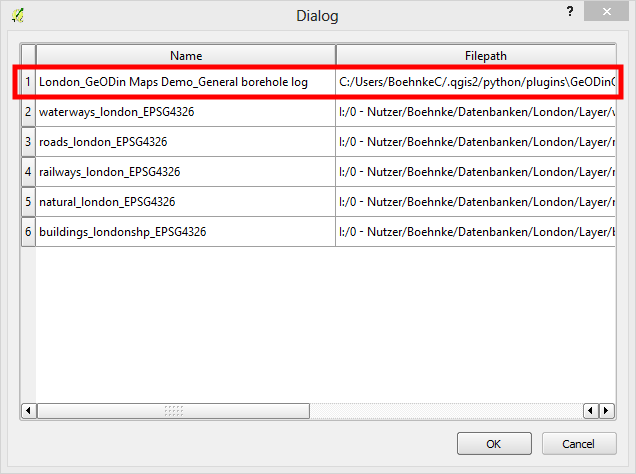
The cases 2 and 3 will fill the table of the
method "New Objects" with the coordinates of the points, if the
vector file is not empty.
Adding a new object
To add a new object the editing mode of QGIS is
used. To do so the vector file is selected in the layer list and the editing
mode is toggled on. Now new points can be created in the map.
Also the points can be moved by using the node
tool.
The method "New Object" also allows
entering exact coordinated, for this the edting mode
must be toggled on. A double click on the proper cell allows to make an entry.
To delete entries from the table the edting mode must be toggled on. The entry will be deleted
from the vector file and is no longer part of the map or the tables.
To accept new, changed or deleted objects the edting mode must be ended and all changes must be saved.
Only then changes will be visible in the attribute and the coordinate table.
Note: Due to an error in the QGIS kernel a crash of the software may
occur, if the edting mode is ended with discarding
all changes.
Export of a new object
A new object, created by the usage of the
plugin, is stored inside a vector layer but is not yet part of a GeODin
database. To do so the object is selected in the coordinate table, the export
coordinates will be displayed in the windows above. The button
"GeODin" is now availbale, which was
deactivated before. A click on the button opens a COM function in the
background, starting the method "Data management" to add the object
to the database. If more than one object is selected, the export function is
deactivated. Only one object at a time can be transferred to GeODin. For adding
multiple objects to the database the GeODin method "Import general
data" can be used to import a shape file.
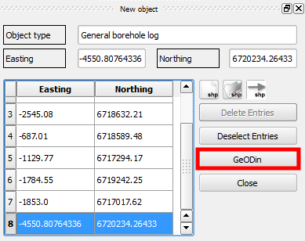 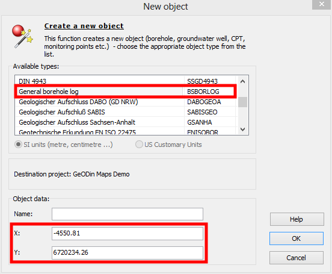
After adding the new object to the database it
will appear in an automated query inside the GeODin obejct
manager and not as part of the proper object type. For this the database has to
be reloaded, the same procedure applies to QGIS.
5 Queries
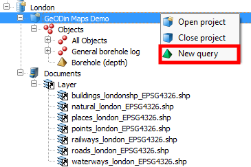
A right click on the project level allows the
creation of queries, symbolised by a green pyramid.
The FROM statement must be entered manually, in
case of complicated queries it can be copied from the query manager of GeODin.
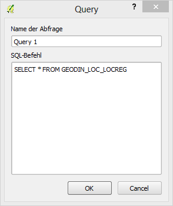
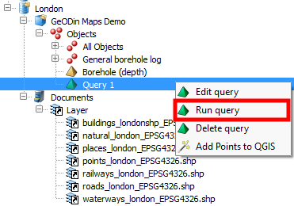
The query must be executed by the user by
opening the right click menu of the query. If successful, the object tree
expands automatically, showing all objects matching this query.
Custom queries, which were created in GeODin,
are automatically imported to QGIS. The symbol is a yellow pyramid. These
queries must be executed manually as well.
As queries act as object groups they can be
added to the QGIS map canvas.
If the GeODin query contains result fields,
they are transferred to QGIS in the background. They will be appended to the
attribute table, if the objects are added to QGIS as a vector file.
6
Layouts
The layout view is executed at the object
itself. To so expand the database tree to the lowerest
level, the object level, and open the right click menu at the proper object.
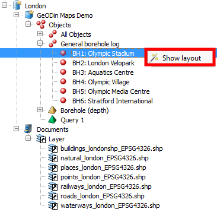
A new dialog opens to declare both the layout
directory and the preferred layout. The upper toolbar allows to add a layout
folder to the list. For this the default layout directory of the GeODin
installation is used. A folder can be deleted from the list in the same way.
The right table view contains all layouts which
are part of the selected layout directory.
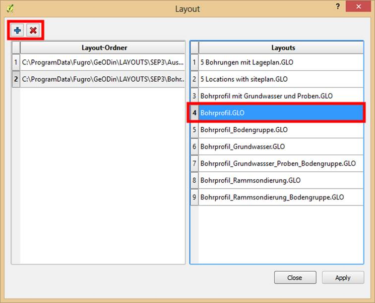
The layout view is a visualisation of a
temporary PDF file. Thereby the common PDF controls like zooming and page
change are available. All preferred layout settings must be set in GeODin, the
plugin only provides the layout view.
7 Setttings
 The settings can be done at the gear
wheel symbol at the toolbar. This includes the operating language and the
plugin's general settings.
The settings can be done at the gear
wheel symbol at the toolbar. This includes the operating language and the
plugin's general settings.
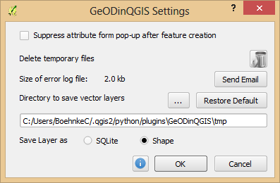
Usually, when creating new objects with the
editing mode of QGIS, a window opens, for the input of attribute data. This
window always appears, if a new feature was added to map canvas. To suppress
this window the option "Suppress attribute form pop-up after feature
creation" may be activated.
Several temporary files will be created when
working with the plugin. If they are no longer needed the whole directory can
be emptied by clicking the button.
If an error occurs, it will be written to the
error log file. There is the possibility to send an email to the GeODin
support. This will open the Email browser automatically. The error message and
the error log file must attached to the email
manually.
Vector files, which were created with the
plugin, will be stored in the temporary directory if not specified. This
directory may be saved at another location in the file system. It is also
possible to restore the default path.
The vector files can be saved in two different formats. The usage of SQLite offers the advantage of fieldnames longer than 8 characters, whereas the fieldnames of shape files are limited to 8 characters. However the performance of shape files is much better.